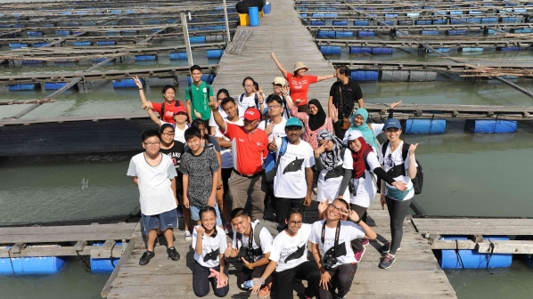

.png)

Stories About Coca-Cola

Saving The Ocean, One School At a Time
Mindset change sets to save the oceans from marine debris, especially plastic, is at the core of the “Water Vision” programme by Coca-Cola and its environmental partner, the Malaysian Nature Society. The programme began back in 2007 with the aim to create awareness and inculcate responsibility amongst the younger generations to conserve what covers 71% of the earth’s surface, water. Over a decade later, it has grown to cover the ever-growing problem of plastic waste washing into the oceans. In the form of a contest, the programme encourages a behavioral change through the power of knowledge and action. Students are required to lead a recycling movement within their schools or local community by setting up a plastic recycling center and initiating a series of collection, sorting and disposal activities while educating their peers on the need to reduce, reuse and recycle to prevent plastic from ending up in our waterways and oceans. Winners of Water Vision 2017 Contest recently gathered for a 3D2N nature camp on the quaint fishing village of Pulau Ketam off Port Klang in Selangor. With their creative ideas and dedicated recycling activities, SMK Taman Desa 2 from Rawang emerged as champion of the environmental contest. They actively involved their peers and community in donating plastic items for recycling and many other green initiatives such as turning the plastic to reusable items as pencil holders and vertical plant holders. Meanwhile SM St. Michael from Kota Kinabalu, Sabah and SMK Darul Ehsan from Gombak, Selangor took second and third place respectively with their impressive presentations. Students were presented their certificates and further inspired to recycle when they each received a Coca-Cola t-shirt and tote bag made from fabric made out of PET plastic bottles. As the first place winner, SMK Taman Desa 2 will also receive a rainwater harvesting system which will be installed at their school for them to use for general cleaning of the school compound, gardening and sanitation thus allowing them to save money off their water bills even as they conserve the precious resource of water. Students and teachers alike had a good time immersing themselves in the wonder of nature under the watchful eyes of MNS officers. Activities included a river cruise where they indulged in some bird watching for water birds, visited a fish farm and even visited an Orang Asli community where they made some donations of basic necessities. Water Vision is one of the programmes under Coca-Cola Malaysia to recover plastic waste and practice sustainable packaging as part of its commitment for a World Without Waste, an initiative by The Coca-Cola Company where it fundamentally reshapes its approach in packaging by collecting and recycling 100% of their packaging by the year 2030.